レシピ難易度：★★★★★
概要
本レシピでは車載GPSトラッカー T366L スターターキットを使った車載の位置情報管理の仕組みを構築します。GPSトラッカーから送信される位置情報をもとに地図上に現在地やその軌跡をプロットしたダッシュボードを作成していきます。
ロケーションデータの取得にはMeitrack T366、ロケーションデータの保存及び可視化にはSORACOM Harvest、SORACOM Lagoonを活用します。またMeitrack T366からのロケーションデータを可視化するためのデータ加工処理としてSORACOM FunkとAWS Lambdaを組み合わせます。
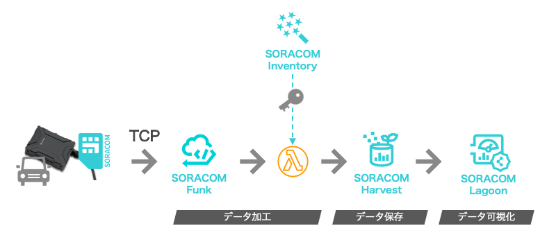
利用するソラコムサービス
サービス名 | 概要 |
クラウドファンクションサービスです。 Meitrack T366からのデータを加工するためにAWS Lambdaと組み合わせて利用します。 | |
デバイス管理サービスです。 ソラコムのセルラー回線以外からSORACOM Harves Datatへデータを書き込むために利用します。 | |
データ収集・蓄積サービスです。 位置情報の保存先として利用します。 | |
ダッシュボード作成・共有サービスです。 SORACOM Harvestに保存した位置情報を使ったダッシュボードを作成するために利用します。 |
本レシピを行うのに必要な時間、概算費用
本レシピは以下の通りです。
- 必要な時間: 約2時間30分
- 概算費用: 約21,000円
※ デバイスを車両へ設置するために要する作業時間及びそのために必要となる工具類の費用を含みません。
※ 概算費用: ハードウェアや SORACOM を始めとした各種サービスの概ねの費用 (税や送料などの付帯費用や無料枠適用は考慮しないものとしています)
このコンテンツの進め方
ページの内容を読み、また作業を行ったら右下の［Next］を押して次のステップへ進みます。また、［Back］を使って戻ったり、左のナビゲーションメニューでもページの移動が可能です。
左上の［×］を押してコンテンツを終了することができます。また、ページを開きなおすことで再開できます。ページのアドレスはブラウザの［履歴］メニューを利用してください。
デバイス
品名 | 数量 | 価格 | 購入先 | 備考 |
車載GPSトラッカー T366L スターターキット | 1 | 19,800円 | ー |
その他必要なもの
必要なもの | 費用 | 作成方法など |
SORACOM アカウント | 無料※ | |
Amazon Web Services アカウント | 無料※ |
※ アカウント作成・維持の費用の料金です。
本レシピで利用する車載GPSトラッカー T366L スターターキットは防水防塵のIP防護レベルがIP67と耐環境性に優れたGPSトラッカーです。そのため車、バイク、ヨット、船といった過酷な環境下でも利用が可能です。また3軸加速度計を搭載しており、デバイス単体で振動でデバイスをウェイクアップしたり、牽引警報、急加速警報、急ブレーキ警報を検知することができます。
本レシピではIoTストアで提供されているMeitrack T366シリーズの標準設定を用いて位置情報を連携していきます。専用の設定ツールを利用することで位置情報の送信頻度の変更や、SMSによる遠隔での設定変更などが可能です。これら本レシピでは扱わない範囲の機能詳細については下記関連リンクをご参考ください。
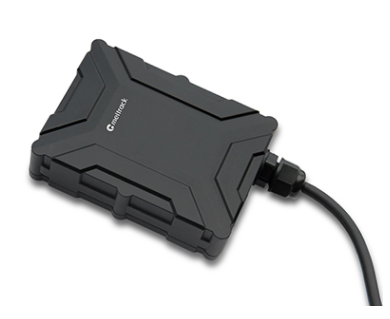
関連リンク一覧
以下のステップで実装を進めていきます。
ステップ | 概要 |
SORACOM Harvest Dataの設定 | 位置情報を利用するためのSORACOM Harvest Dataの設定をおこないます。 |
SORACOM Lagoonの設定 | SORACOM Harvest Dataに蓄積したデータを可視化するためのSORACOM Lagoonの利用設定をおこないます。 |
デバイスキッティング | Meitrack T366にSIMをセットし事前の動作確認をおこないます。 |
データ加工処理の作成※ | Meitrack T366より連携されるデータを可視化するためにデータを加工しSORACOM Harvest Dataへ書き込みます。SORACOM Funk+AWS Lambdaによりデータの加工処理をおこない、その後のSORACOM Harvest Dataへデータの書き込みをおこないます。 |
位置情報ダッシュボードの作成 | SORACOM Harvest Dataへ保存された位置情報をもとにSORACOM Lagoonでトラッキングするためのダッシュボードを作成します。地図上に位置情報をマッピングしていきます。 |
SORACOM の IoT データ収集・蓄積サービス SORACOM Harvest Data を利用して、データの可視化を簡単に実現してみましょう。
まずはグループの作成と、作成したグループへ SIM を所属させる事から始めます。
SORACOM ユーザーコンソールにログインした後［Menu］>［SIM 管理］とクリックして SIM 管理画面を開きます。
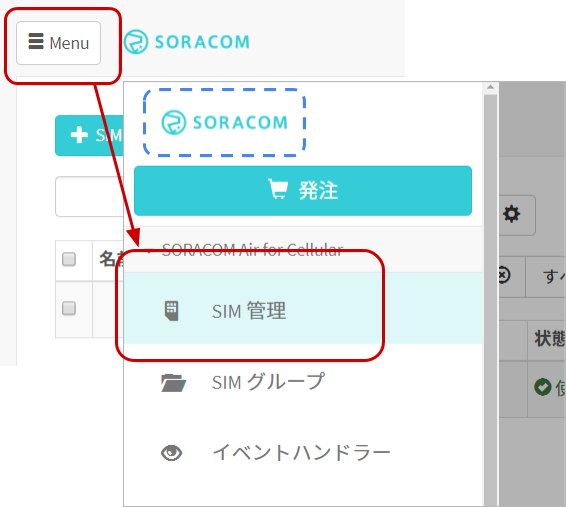
SORACOM Harvest Data でデータの収集を行いたい SIMにチェックを付け、［操作］>［所属グループ変更］とクリックします。

「新しい所属グループ」のプルダウンボックスをクリックした後、［新しいグループを作成...］をクリックします。

「グループ作成」のグループ名を入力して［グループ作成］をクリックします。
項目 | 例 | 備考 |
グループ名 |
| 自由に入力可能です。日本語も設定可能です。 |
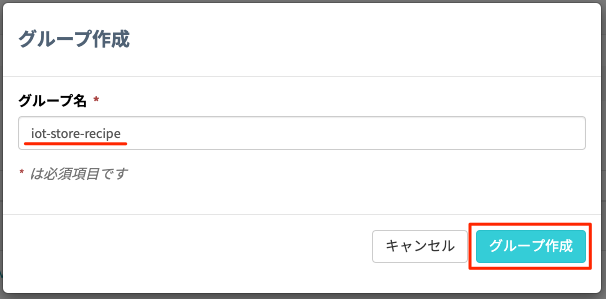
新しい所属グループが先ほど作成したグループになっていることを確認したら［グループ変更］をクリックします。

自動的に SIM 管理画面に戻ります。
SIM の「グループ」に先ほど作ったグループが設定されていることを確認してください。
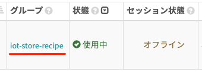
以上で、グループの作成と所属の作業は完了です。
SIM 管理画面から、利用するSIMに割り当てたグループ名をクリックします。
［基本設定］ >［SORACOM Harvest 設定］をクリックして設定ができるように開きます。
先ほどの設定を行ったページ内にあります。

「SORACOM Harvest 設定」で以下のように設定します。
項目 | 設定値 | 備考 |
（スイッチ） | ON | ― |
スイッチはクリックすることで OFF から ON に切り替えることができます。

最後に［保存］をクリックしてください。
その後表示される「SORACOM Harvest が有効になっています」のダイアログでは［OK］をクリックしてください。
以上で「SORACOM Harvest Data」の設定が完了しました。
SORACOM Lagoon を有効化していきます。
SORACOM Lagoon 用語解説
ここで SORACOM Lagoon で使われる用語を解説します。
用語 | 意味 |
プラン | SORACOM Lagoon の契約プランです。機能と料金が異なります。SORACOM Lagoon のご利用料金に機能や料金の比較表があります。 |
メトリクス (メトリック) | データが格納されている先です。SORACOM Lagoon では以下の4つの中から選び、その中からノード(SIMや回線)を選択します。
|
データソース | メトリクスの参照先です。SORACOM Lagoon では "Harvest" (= SORACOM Harvest) を選ぶとメトリクスが展開されます。 Grafana ではテスト用のランダムデータが表示されます。 |
パネル | パネルはデータを表示する領域です。データソースとメトリクスを指定すると、そのメトリクス(たとえばSIM)のデータをパネルで使えるようになります。 様々なパネルが存在します。 |
ダッシュボード | 複数のパネルを束ねて「1枚の画面」にしたものがダッシュボードです。共有の単位となります。 |
SORACOM Lagoon ユーザー (Lagoon ユーザー) | SORACOM Lagoon へログインするためのユーザー(IDとパスワードの組) SORACOM ユーザコンソールへのログインとは異なるユーザ一覧となり、皆さん自身で登録・削除が可能です。ダッシュボードやパネルを編集できる「編集可能」と表示専用の「読み取り」の2段階の権限を設定できます。 作成可能数はプランによります。 |
データリフレッシュ | SORACOM Harvest から SORACOM Lagoon へデータが反映される事、もしくは反映タイミングとなります。反映タイミングはプランによります。 |
アラート | メトリクスのデータに対して条件を設定し、その条件を満たしたら通知を行う仕組みの事です。 |
SORACOM ユーザーコンソールの［Menu］>［データ収集・蓄積・可視化］>［SORACOM Lagoon］とクリックします。

［SORACOM Lagoon の利用を開始する］をクリックします。

プランのうち［Free］を選択したあと［続行する］をクリックします。

SORACOM Lagoon ユーザーの初期ユーザーに設定するパスワードを入力した後、［利用開始］をクリックします。

SORACOM Lagoon の有効化に成功すると、以下のように SORACOM Lagoon コンソールへのリンクと、Lagoon ユーザーの一覧が管理できるようになります。
この画面を SORACOM Lagoon 管理画面と呼びます。

SORACOM Lagoon 管理画面は、SORACOM Lagoon が有効化されている間は ［Menu］>［データ収集・蓄積・可視化］>［SORACOM Lagoon］で表示する事ができます。
SORACOM Lagoon 管理画面を表示したあと、［SORACOM Lagoon console にアクセス］をクリックします。
※ SORACOM Lagoon 管理画面は ［Menu］>［データ収集・蓄積・可視化］>［SORACOM Lagoon］で表示する事ができます。

SORACOM Lagoon へログインします。
メールアドレス (SORACOM ユーザコンソールへログインする際のメールアドレス) と、SORACOM Lagoon 初期ユーザ作成時に利用したパスワードでログインします。
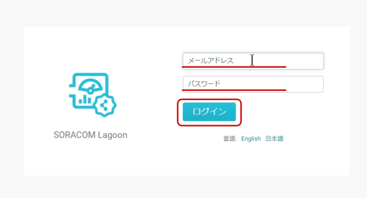
ログインに成功すると、以下のような画面が表示されれば設定完了です。

IoTストアにて提供していますMeitrack T366シリーズは標準設定としてソラコムを利用するためのAPNの設定、データの送信先にSORACOM Unified Endpointが設定されています。そのためSIMを挿し電源を入れるだけでUnfied Endpointへ位置情報の送信が開始されます。
下記画像のようにMeitrack T366のカバーを外しSIMスロットにSIMを挿入してください。
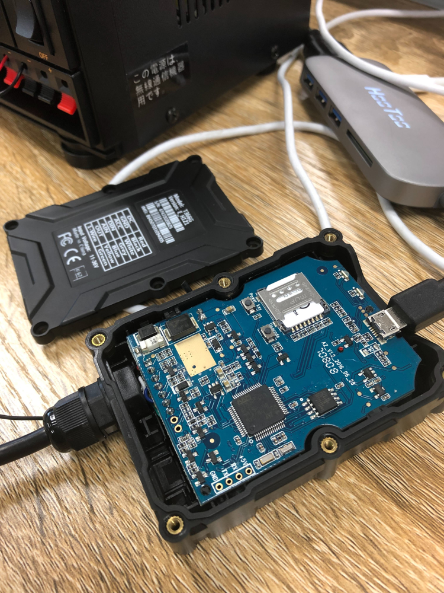
次に動作確認を進めていきます。下記の手順にそってMeitrack T366より送信された位置情報を含むデータがSORACOM Harvestに連携されていることを確認してください。
［Menu］>［SIM 管理］とクリックして SIM 管理画面を開きます。
SORACOM Harvest Data でデータの収集を行いたい SIM にチェックを付け、［操作］>［データを確認］とクリックします。

表示された画面で［自動更新］を ON にします。Meitrack T366からデータが送信されていると下記のようにデータを確認できます。
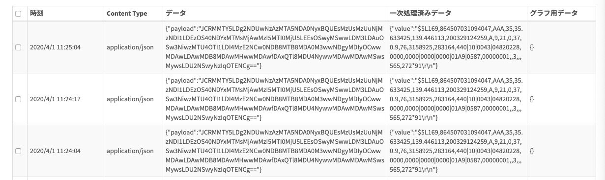
本レシピでは車両の位置情報をトラッキングするために必要となる緯度経度の情報のみを抽出しSORACOM Harvestへ連携することとします。
データ処理のためにSORACOM Funk＋AWS Lambdaを利用します。
SORACOM Funk+AWS Lambdaで整形後のデータをSORACOM Harvestへ書き込むために、SORACOM Inventoryもあわせて利用します。
具体的にはSORACOM Inventoryから設定したデバイスシークレット情報を用いてAWS Lambdaからインターネット経由でSORACOM Harvestへデータを連携していく流れとなります。
まずはじめに、SORACOM Inventoryでデバイスキーの作成をおこなっていきます。作成したデバイスキーを利用することで、ソラコムのセルラー回線以外のインターネット通信でもSORACOM Harvestへデータを書き込むことができます。
このデバイスキーを用いてSORACOM FunkからコールしたAWS LambdaからSORACOM Harvest Dataへの書き込みをおこないます。
SORACOM ユーザーコンソールにログインした後［Menu］>［SORACOM Inventory］> ［デバイス管理］とクリックして設定画面を表示
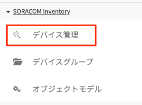
［デバイスを追加］をクリックします。
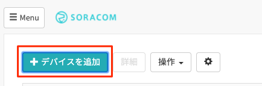
作成するデバイスの［名前］と所属させる［グループ］を設定し［作成］をクリックします。
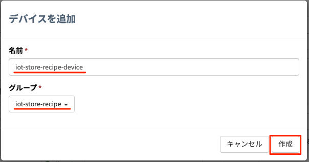
項目 | 例 | 備考 |
名前 |
| 自由に入力可能です。日本語も設定可能です。 |
グループ |
| 「SORACOM Harvest Dataの設定」にて作成したグループを指定してください。 |
デバイスキーが表示されるので［クリップボードにコピー］をクリックし別途テキストエディター等に保存してください。
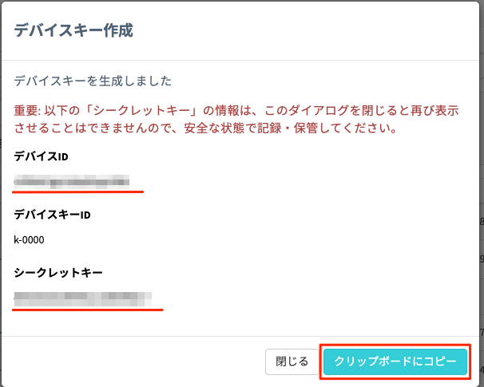
以上でデバイスキーの作成は完了です。
次にSORACOM FunkよりコールされるAWS Lambdaの準備をします。具体的な実装の前にMeitrack T366より連携されるデータの中身についてみていきましょう。
Meitrack T366の電源をいれると以下のようなフォーマットのデータにより位置情報の連携が行われます。
$$L169,864507031094047,AAA,35,35.633425,139.446113,200329124259,A,9,21,0,37,0.9,76,3158925,283164,440|10|0043|04820228,0000,0000|0000|0000|01A9|0587,00000001,,3,,,565,272*91
各項目の詳細については下記Protocolガイドをご参照ください。
上記ドキュメントによると AAAの後ろに続く2項目35,35.633425が緯度、経度となるためこの2項目を抽出します。
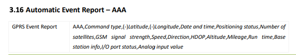
本レシピではAWS LambdaのランタイムはNode.js 12.xで実装していきます。
const http = require('https');
exports.handler = async (event) => {
const payload = event.payload.split(',')
const locationData = {
'lat': payload[4],
'lon': payload[5]
}
return new Promise((resolve, reject) => {
const options = {
hostname: 'api.soracom.io',
port: 443,
path: '/v1/devices/process.env.DEVICE_ID/publish', //環境変数DEVICE_IDにデバイスIDを設定
method: 'POST',
headers: {
'Content-Type': 'application/json',
'x-device-secret': process.env.DEVICE_SECRET //環境変数DEVICE_SECRETにシークレットキーを設定
}
};
const req = http.request(options, (res) => {
resolve('Success')
});
req.on('error', (e) => {
reject(e.message)
});
req.write(JSON.stringify(locationData));
req.end();
});
};先程SORACOM Inventory側で作成したデバイスキー情報は環境変数経由でLambdaファンクションにわたしています。先程作成したデバイスキー情報をAWS Lambdaの環境変数に設定してください。
SORACOM FunkからAWS Lambdaをコールするための設定をおこなっていきます。SORACOM Funkの設定にあたり、呼び出すLambdaファンクションのARNとSORACOM FunkからLambdaを呼び出すためのIAMユーザ情報が必要となります。あらかじめ下記ドキュメントを参考に作成したAWS LambdaのARN、SORACOM FunkからAWS Lambdaを呼び出すためのIAMユーザー情報を作成してください。
SORACOM Funk を利用して AWS Lambda を呼び出し Slack へ通知する
作成したIAMユーザ情報をソラコムの認証情報ストアへ登録します。
ユーザーコンソールの右上にあるユーザー名をクリックし ［セキュリティ］をクリックします。
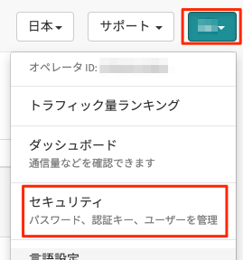
［認証情報ストア］> ［認証情報を登録］をクリックします。
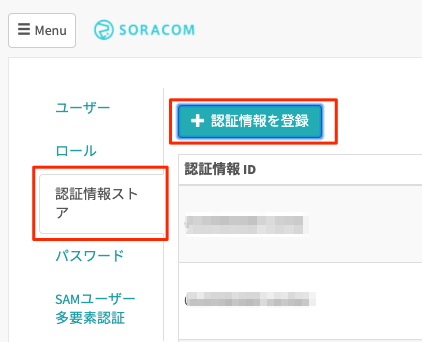
下記の情報を認証情報として登録をします。
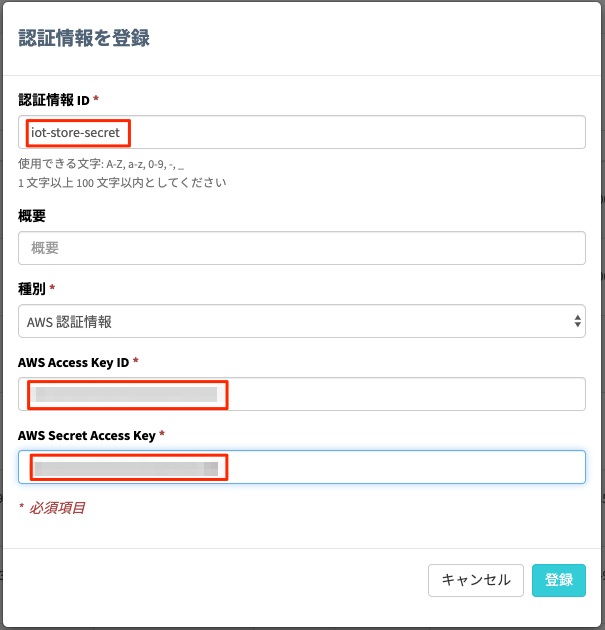
項目 | 例 | 備考 |
認証情報ID |
| 自由に入力可能です |
概要 |
| 自由に入力可能です |
種別 |
| - |
AWS Access Key ID |
| - |
AWS Secret Access Key |
| - |
SORACOM Funkの設定をします。SIM 管理画面から、利用するSIMに割り当てたグループ名をクリックします。
[基本設定］ >［SORACOM Funk 設定］をクリックして設定ができるように開き情報を設定します。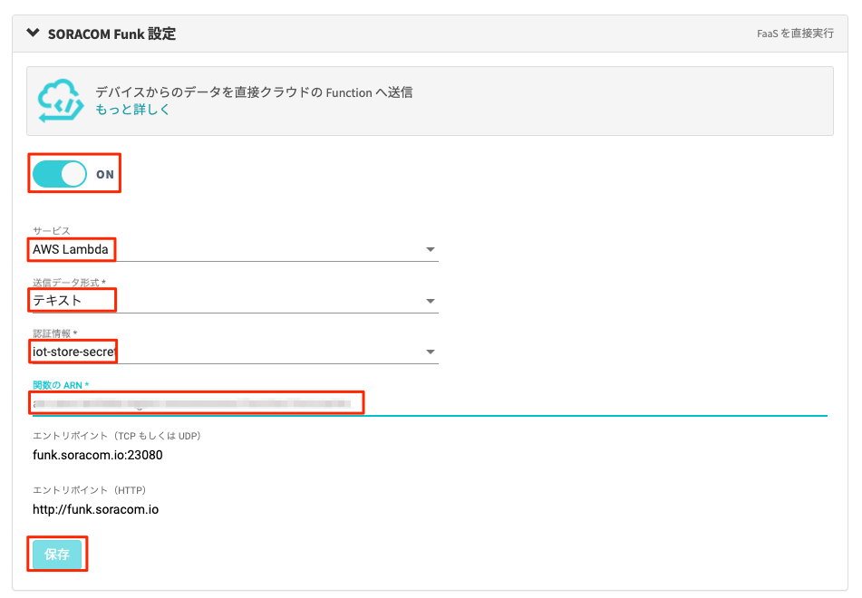
項目 | 例 | 備考 |
（スイッチ） | ON | ― |
サービス |
| ― |
送信データ形式 |
| ー |
認証情報 |
| 認証情報ストアに登録した認証情報を指定してください。 |
関数のARN |
| 作成したLambdaファンクションのARNを指定してください。 |
Meitrack T366の電源を投入してください。SORACOM Funk+AWS Lambdaにより整形されたデータがSORACOM Harvest Dataに書き込まれていることを確認します。
［Menu］>［SORACOM Inventory］> ［デバイス管理］とクリックしてデバイス一覧画面を開きます。
本レシピで作成したデバイスを選択し右クリック > ［データを確認］をクリックします。
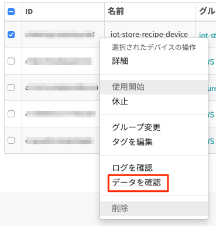
下記のようにデータが連携されていることを確認してください。
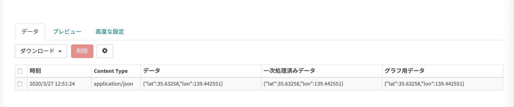
次にSORACOM Harvest Dataに蓄積された位置情報をSORACOM Lagoonを用いてダッシュボードを作成していきます。
SORACOM ユーザーコンソールの［Menu］>［データ収集・蓄積・可視化］>［SORACOM Lagoon］とクリックします。
[SORACOM Lagoon consoleにアクセス］ をクリックします。
SORACOM Lagoon へのログイン画面が表示されるので本レシピで作成したユーザー/パスワード情報を入力します。
SORACOM Lagoonのホーム画面左にある［+］をクリックし［ダッシュボード］をクリックします。
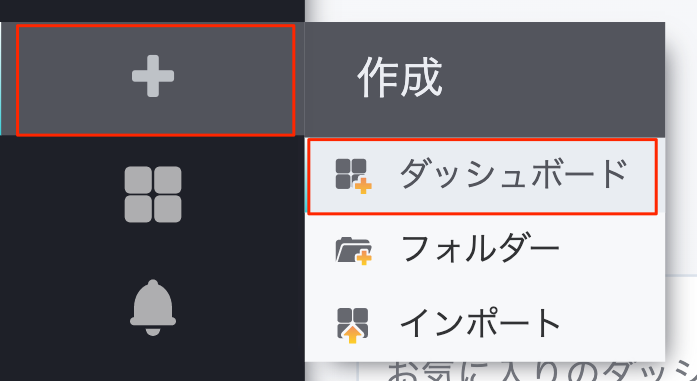
表示されているパネルから［Add］>［Soracom Map Panel］を選択してください。
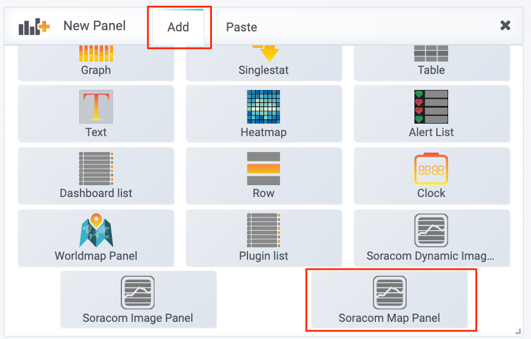
作成されたパネルのタイトル部分をクリックし、［編集］をクリックします。
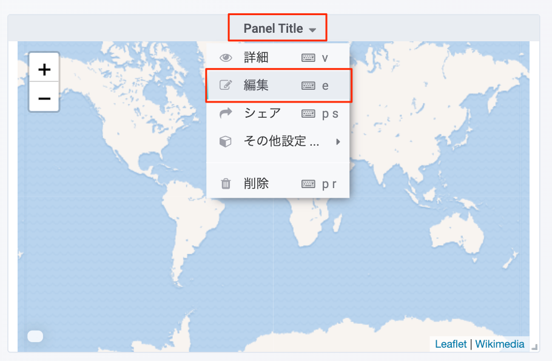
Deviceを選択 > SORACOM Inventoryより設定したデバイスIDを選択します。SORACOM Harvestに投入する際に加工したJSONデータのキーを以下のように設定してください。
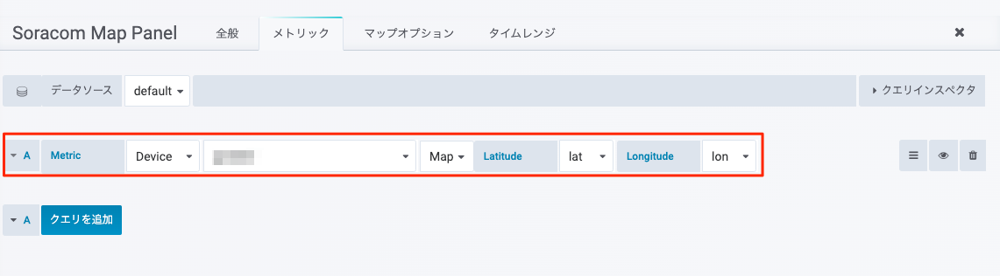
画面右上にある［ダッシュボードに戻る］をクリックします。
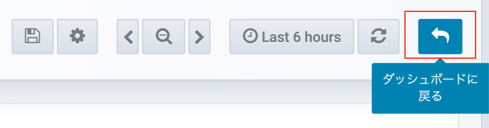
設定が完了すると下記のように位置情報を地図にマッピングされたパネルが表示されます。
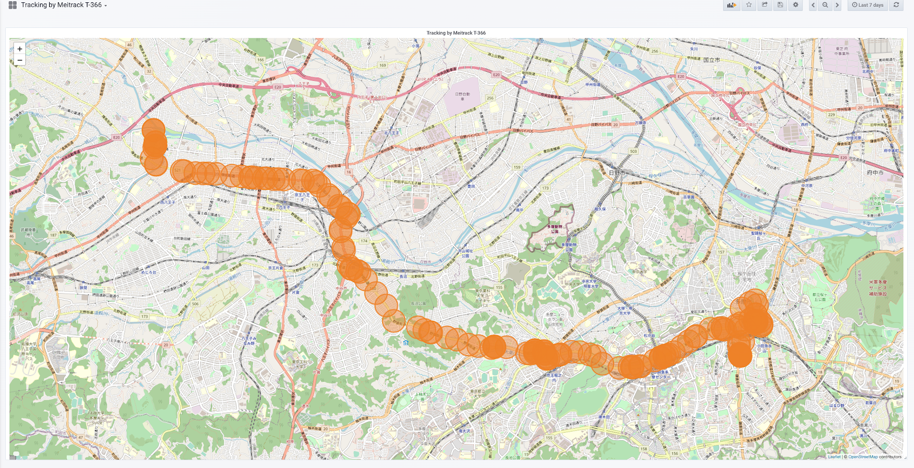
また先程のパネル編集画面よりマップオプションより移動の軌跡を表示させたり、アニメーションを付けることも可能です。
［マップオプション］ > ［クエリAオプション］ > ［軌跡を表示］と［アニメーション］を有効にすると位置情報の軌跡を描けます。

作成したダッシュボードを保存していきます。画面右上の［ダッシュボードを保存］をクリックします。

ダッシュボードに任意の名前をつけて、［保存］をクリックします。
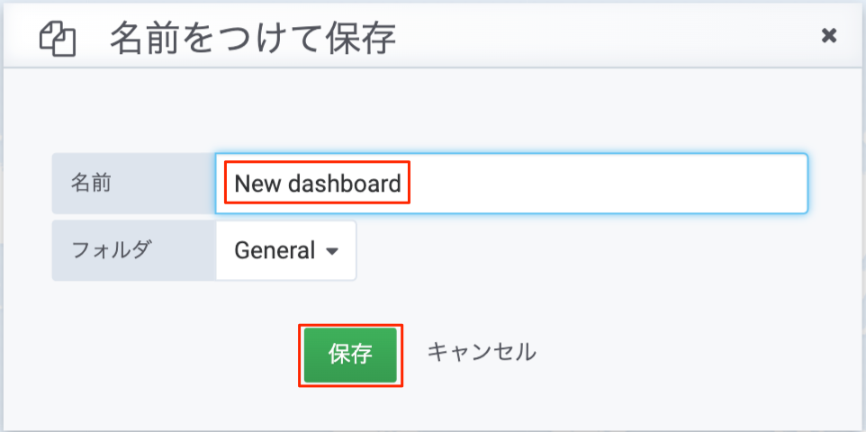
以上でダッシュボードの作成は完了です。
本セクションではMeitrack T366の取り付けイメージについてみていきましょう。
必要な工具類
以下に挙げる工具類は、マツダ デミオ（DE3FS）に取り付ける場合の一例です。
工具 | 用途 | 参考価格 |
10mmレンチ | バッテリーの取り外しのため | 100円 |
乾電池式のバックアップ電源 | バッテリーの取り外しのため | 2,000円 |
内張りはがし | 内装パーツの取り外しのため | 600円 |
10mmナットドライバー | デミオのセンターコンソール裏の奥まったナットを回すのに使用 | 1,000円 |
テスター/ミノムシクリップ | 通電確認に使用 | 4,000円 |
圧着工具 | ギボシ端子の圧着に使用 | 1,500円 |
エーモン ギボシ端子（オス） | 200円 | |
エーモン 電源取り出しコネクター | 250円 |
取り付け
以下の取付手順は、マツダ デミオ（DE3FS）に取り付ける場合の一例です。
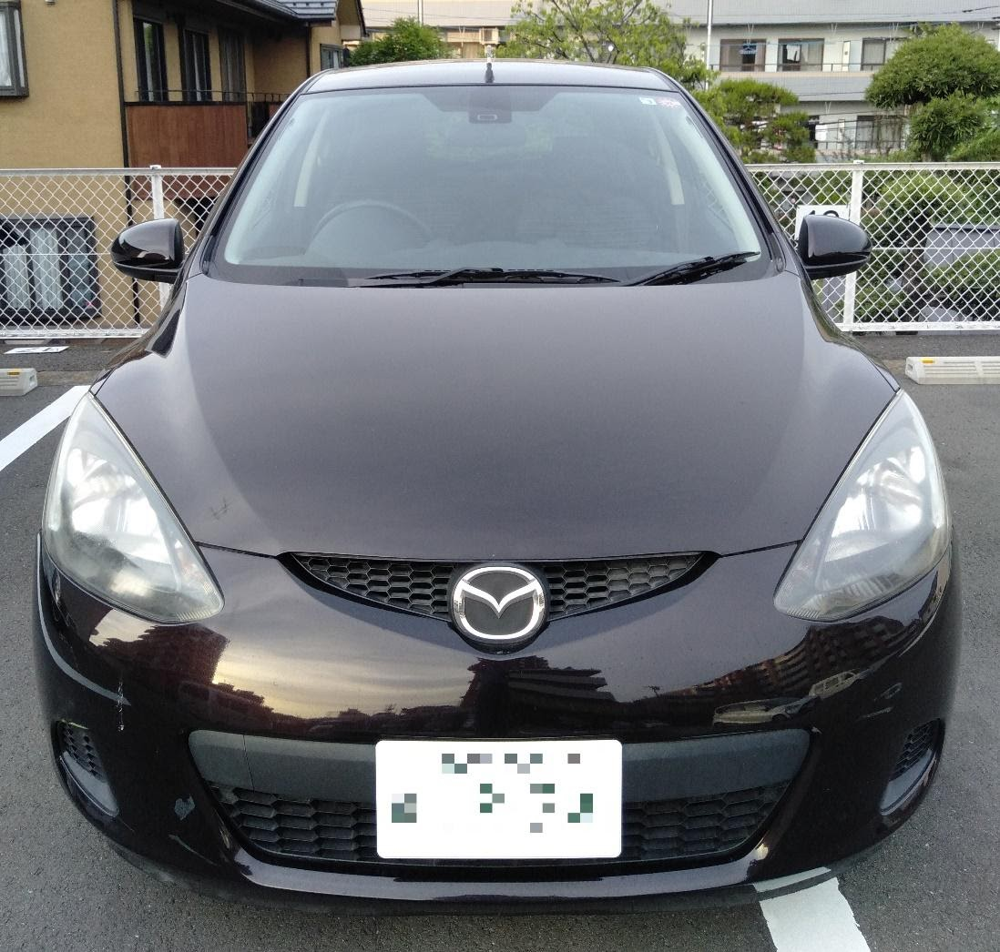
ダッシュボードの奥にはDC 12Vのアクセサリー電源があり、カーナビなどに給電しています。今回、そのアクセサリー電源から給電しつつ、そのままダッシュボードの奥にT366を埋め込むことにします。GPSやセルラー通信の受信感度という点ではベストな取り付け位置とは言えませんが、これによりT366を全く表に出さずにトラッキングが可能になります。
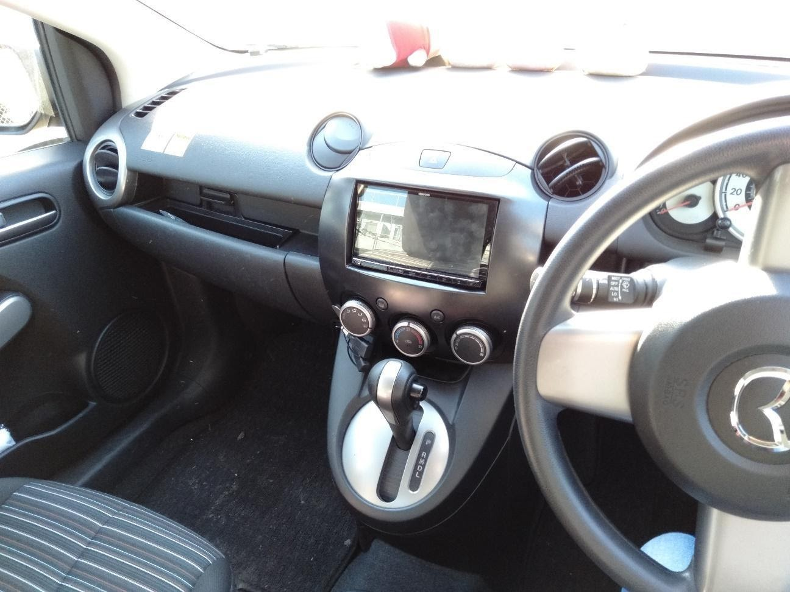
配線に触れる作業を行う前に、念のためカーバッテリーを外します。これにより、配線作業中の事故によるカーバッテリーのショートを防ぎます。カーバッテリーを外す際は、メモリーバックアップのため、乾電池式のバックアップ電源を接続した状態で、カーバッテリーのみ取り外します。バッテリーの取り外しに際しては、ショート防止の観点から、-端子を先に取り外し、+端子を後から取り外すなど、他にも注意点があります。対象の車種に関してよく情報収集した上で、作業にあたってください。
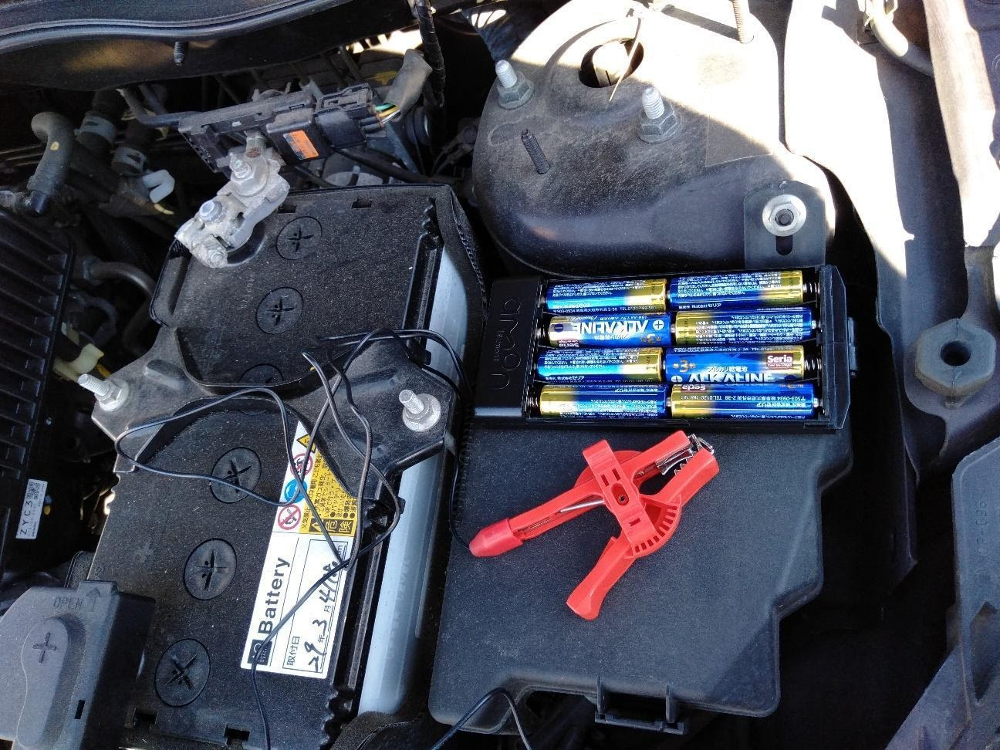
内装パーツを外していきます。内装パーツはツメで固定された樹脂部品がほとんどですので、内張りはがしを隙間に差し込んでパーツを浮かしながら、外していきます。一部、ナットやネジ止めされている部品もあるので、レンチやドライバーも必要になります。これについても、それぞれの車種に固有の手順をよく確認した上で、作業にあたってください。
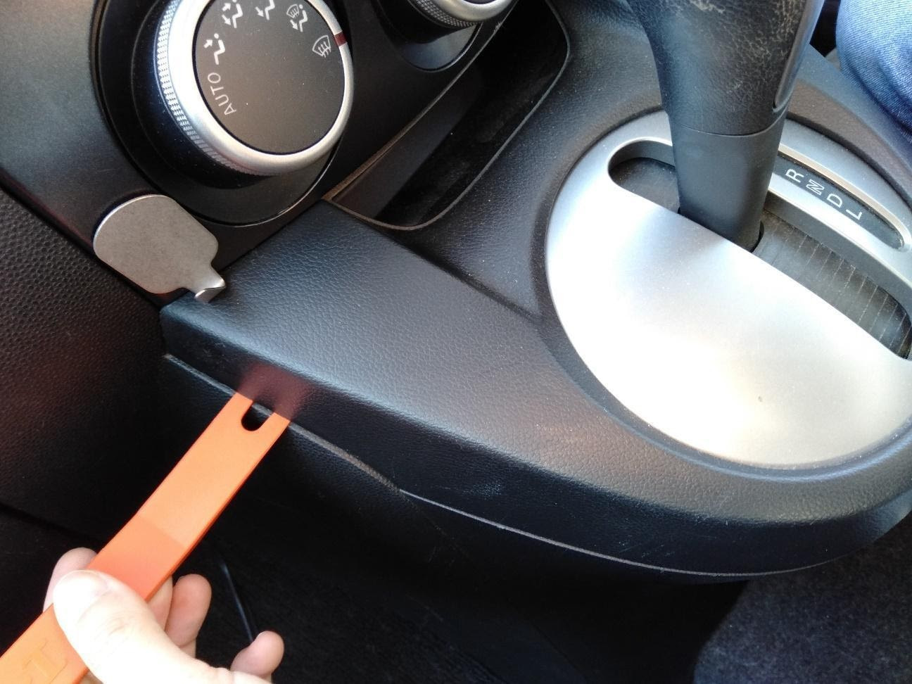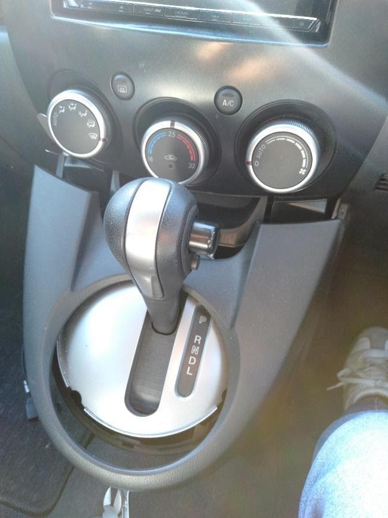
一通り内装パーツを外し終えると、カーナビ裏の配線にアクセスできます。
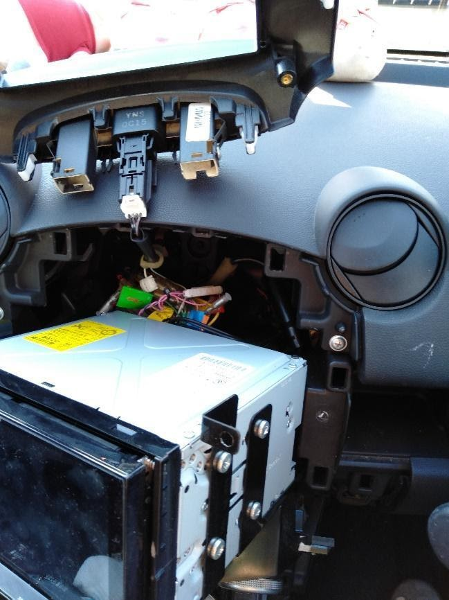
配線は車種や、カーナビなど電装系にどこまで手を入れているか、によっても異なります。今回、カーナビのアダプタから伸びているアクセサリー電源の端子に空きがあったので、そのまま利用します。端子形状はギボシ端子（メス）です。
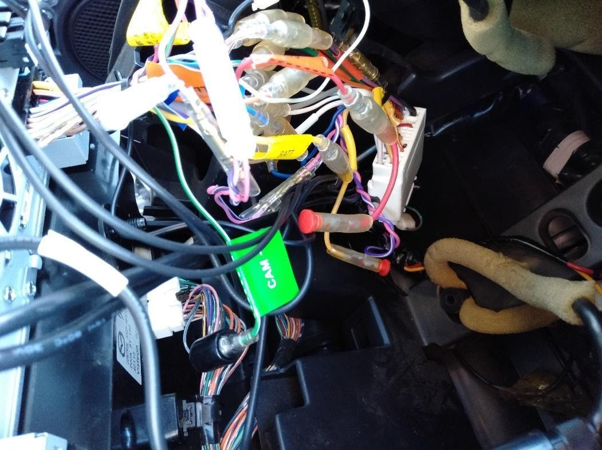
通電確認のため、テスターをあてた状態でカーバッテリーをつなぎ直し、エンジンをかけると、カーナビの電源ONに伴って12V強の電圧が得られました。この端子からアクセサリー電源がとれることが確認できたので、再度カーバッテリーを外して作業再開します。
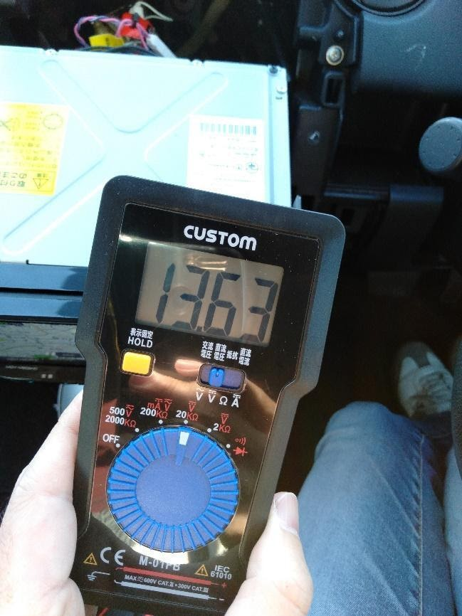
GNDの空き端子がなかったので、GND線に「エーモン 電源取り出しコネクター」を圧着して、GND線を分配します。こちらも先端の端子形状はギボシ端子（メス）です。
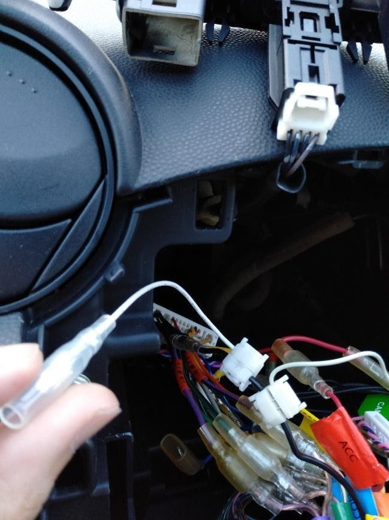
これでアクセサリー電源とGNDが取り出せる状態になりました。車側の端子形状はギボシ端子（メス）なので、T366の電源・GNDにはギボシ端子（オス）を圧着します。
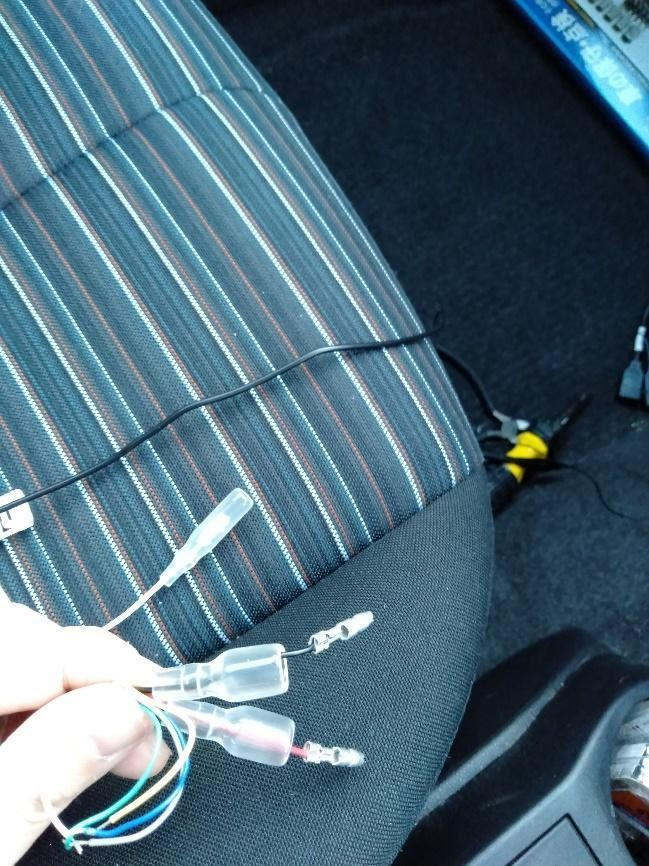
今回、その他の信号線は使いません。ショート防止のため、テープでマスクしておきます。
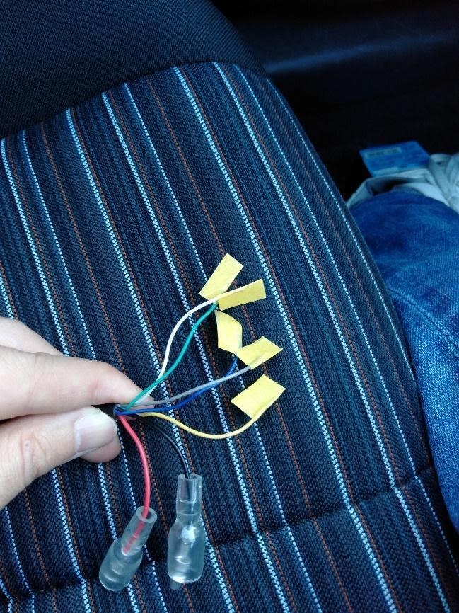
ギボシ端子（オス）をしっかり差し込んでT366を車に接続します。
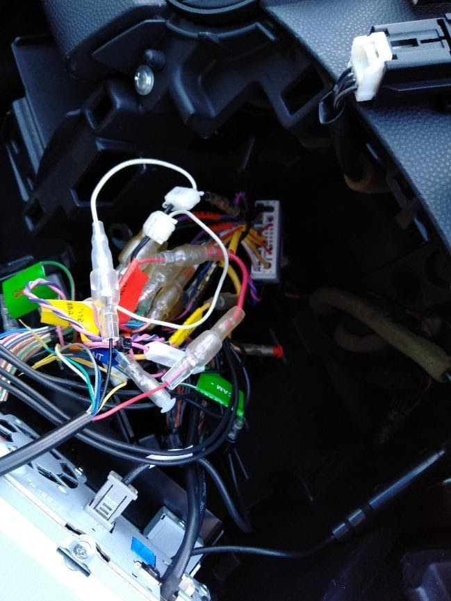
T366本体はカーナビ上のスペースにそのまま収納します。今回、ビニールテープでカーナビに直接固定しています。
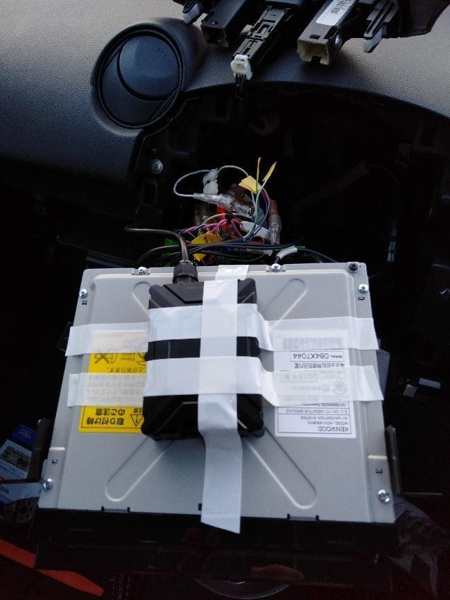
内装パーツを元に戻し、カーバッテリーをつなぎ直せば完成です。エンジンをかけると、アクセサリー電源からT366に給電され、GPS信号が発信されるようになります。